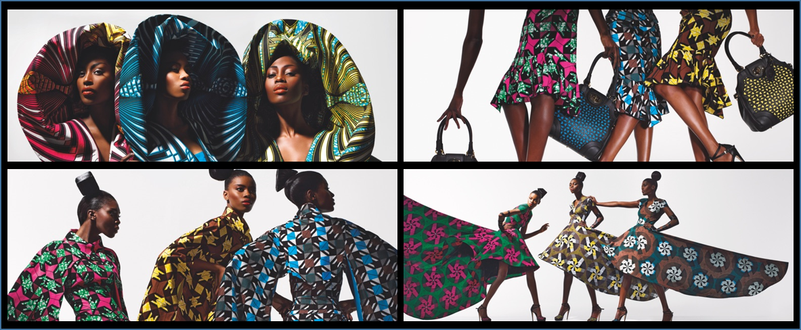

Wax-MNIST is an image dataset created for machine learning. It is similar to the well-known MNIST dataset, which contains images of handwritten digits. However, instead of digits, Wax-MNIST images represent colored patterns found on African fabrics, such as wax, kente, or bogolan. Wax-MNIST was created to encourage cultural diversity in AI projects and raise awareness of the richness of African patterns.
African fabric, also known as “pagne” in some regions of Africa, has different names depending on the regions and countries of Africa. For example, in West Africa, it is called “wax cloth,” “African cloth,” or “printed cloth,” while in Central Africa, it is often called “pagne fabric” or “African fabric.” There are also many other names and designations for these fabrics, which are often associated with specific patterns and designs.
However, Wax fabric is not a traditional African fabric like Kente, Bogolan, Faso Dan Fani, or other hand-woven fabrics, as it was introduced to West Africa by Dutch and English traders in the 19th century. However, Wax fabric has become very popular in West Africa and is now considered an iconic African fabric. The vibrant patterns and colors of Wax fabric are often associated with African fashion and culture. Despite its relatively recent origin, Wax fabric has become an important part of African clothing culture and is often used for special occasions and important events.
This dataset was created as part of the WaxClassification project. The aim of this project was to provide African Wax fabric customers with a tool to help them purchase Wax fabrics on markets. Technically, the project is based on machine learning and image classification with a model deployment with Android Studio. Indeed, the application allows users to know the brand, quality, price, and recommendations of the fabric they want to buy from an image of the fabric.
The images were collected online from various e-commerce sites such as Amazon, Cdiscount, tissusplus.com, ebay, etsy.com, afrikrea.com, …, and through Google search image and Facebook APIs. Labeling was done at two levels. A first automated level during collection from keywords and product descriptions of e-commerce sites. A second level was performed manually by the project team and other collaborators.
The current dataset consists of approximately 1081 images of size 64 x 64 or 28 x 28 in 8 categories of fabrics.
There are undoubtedly many types of Wax fabrics, each with its own patterns, colors, and styles. This data concerns the most well-known ones:
The Wax-MNIST database was created to facilitate automatic classification of African Wax fabrics and automatic recognition of patterns and symbols in African Wax fabrics. Here are some possible objectives and tasks for this database:
Pattern recognition: Patterns in African Wax fabrics can have important cultural and symbolic meanings. The Wax-MNIST database can be used to train pattern recognition models to identify and classify different patterns in Wax fabrics.
Fabric classification: The Wax-MNIST database can be used to train fabric classification models to differentiate between different types of Wax fabrics.
Fashion application development: Pattern recognition and fabric classification models trained using the Wax-MNIST database can be used to develop fashion applications, such as clothing design tools or style recommendation applications based on user preferences.
Cultural preservation: African Wax fabrics are an important element of African culture. The Wax-MNIST database can be used to help document and preserve these fabrics by digitizing and categorizing fabric patterns and styles.
Education: The Wax-MNIST database can be used to raise awareness about the different types of African Wax fabrics and their cultural significance. This can help promote cultural diversity and combat cultural marginalization.
African Fabric Images : Image Dataset of African Fabric Patterns and Textiles, is made available on Kaggle by AYOMIKUN SAMUEL. This project contains approximately 1056 unlabeled images.